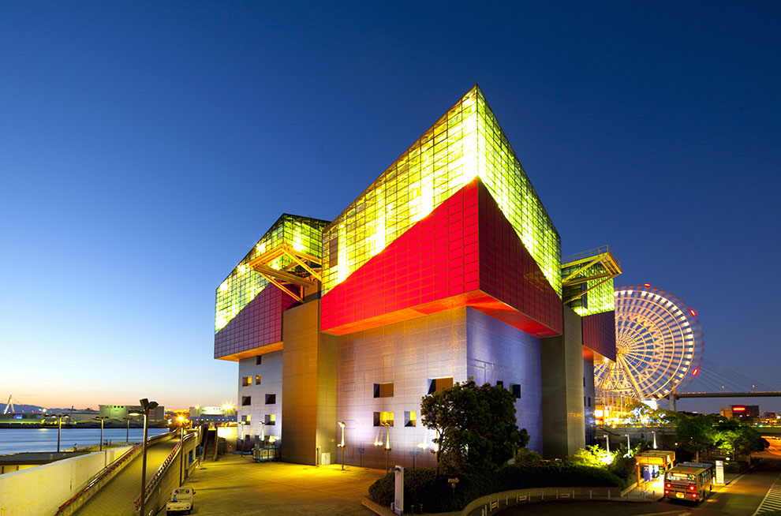
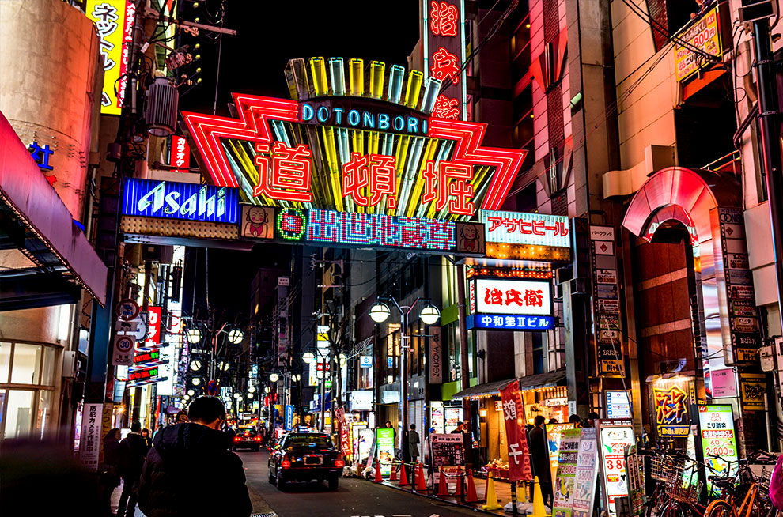

搭乘時間：2018/10/28-2019/03/30
| 航班號 | 航線 | 起飛時間 | 抵達時間 | 飛行日 |
| IT210 | 桃園－大阪 | 06:55 | 10:25 | 每日 |
| IT212 | 桃園－大阪 | 14:15 | 17:45 | 每周一、二、三、五、六、日 |
| 15:30 | 19:00 | 每周四 | ||
| IT211 | 大阪－桃園 | 11:30 | 13:50 | 每周一、三、五、六 |
| 14:00 | 16:20 | 每周二、四、日 | ||
| IT213 | 大阪－桃園 | 18:35 | 20:55 | 每周一、二、三、五、六、日 |
| 19:50 | 22:10 | 每周四 | ||
| IT284 | 高雄－大阪 | 09:10 | 12:55 | 每周二、四、日 |
| IT285 | 大阪－高雄 | 11:15 | 14:00 | 每周二、四、日 |

巴士：
▪機場至難波站：搭乘關西機場交通∕日本交通巴士，車程約50分鐘，單程票價1,050日圓起
▪機場至大阪站前（梅田）：搭乘關西機場交通∕大阪機場交通∕阪神巴士，車程約58分鐘，單程票價1,550日圓起
▪機場至天保山（海遊館）、環球影城：搭乘關西機場交通∕阪神巴士∕近鐵巴士，至天保山車程約60分鐘，至環球影城車程約70分鐘，單程票價1,550日圓起
電車：
▪機場至難波站：搭乘南海電鐵機場特快，約43分鐘，單程票價920日圓
▪機場至天王寺：搭乘JR關西機場快速∕特急Haruka，最快30分鐘
▪機場至新大阪：搭乘JR特急Haruka，最快50分鐘
▪機場至京都：搭乘JR特急Haruka，最快75分鐘
▪機場至和歌山：搭乘JR關西機場快速，最快35分鐘


大阪環球影城
日本最具人氣的主題樂園之一，以電影為主題的遊樂設施讓大人小人在此度過非日常的夢幻時光

海遊館
馳名世界的水族館，巨型水槽重現太平洋周遭海洋環境，讓旅人可近距離觀察海底生物的姿態

道頓堀、心齋橋
大阪數一數二的熱鬧商圈，不分日夜人潮不斷，知名的餐廳也都相繼於此展店，是自由行必逛之處

章魚燒
於昭和時期的大阪誕生，從此風靡全日本，是大阪的名物料理之一，當成點心或下酒菜都很適合
大阪燒
關西知名美食，將低筋麵粉混入各式食材，放到鐵板煎熟，淋上醬汁美乃滋再撒上柴魚片，口感鬆軟
串炸
同樣誕生於大阪，是從炸豬肉串開始演變至今為油炸各種食材，深受歡迎，商業區隨處可見串炸店